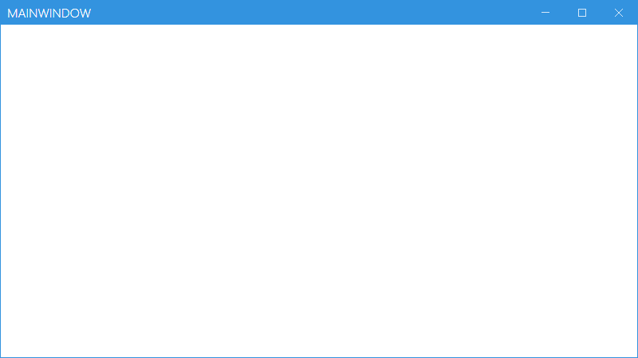
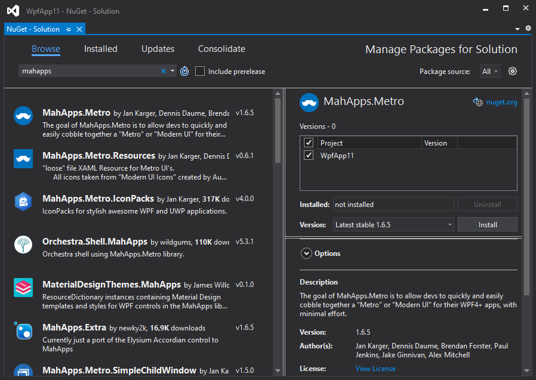
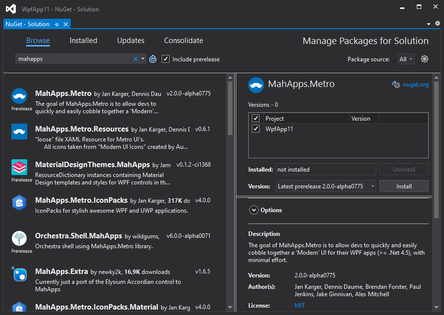
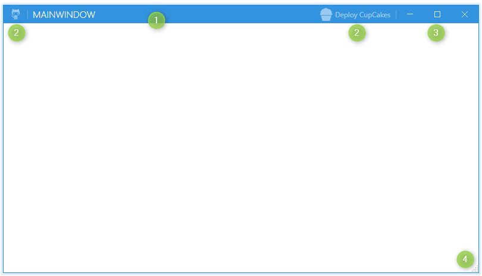
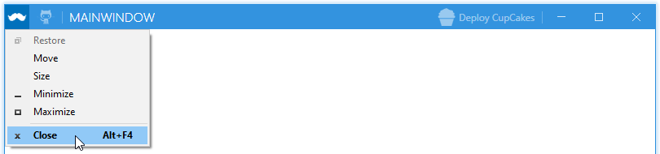

Three steps take a stock WPF application to a styled one: install the package, merge the resource dictionaries, swap Window for MetroWindow. Nothing else in your XAML has to change — your existing controls are restyled where they stand.
This is where you will end up:

1. Install the package
Pick whichever you prefer — the .NET CLI, the Package Manager Console, or the NuGet UI.
dotnet add package MahApps.Metro
PM> Install-Package MahApps.Metro

For a pre-release build, tick Include prerelease in the NuGet UI:

or add the flag on the console:
PM> Install-Package MahApps.Metro -Pre
2. Add the resource dictionaries
Every resource in MahApps.Metro lives in its own dictionary. Merge them into your App.xaml and the styling applies across the application.
<Application x:Class="SampleApp"
xmlns="http://schemas.microsoft.com/winfx/2006/xaml/presentation"
xmlns:x="http://schemas.microsoft.com/winfx/2006/xaml"
StartupUri="MainWindow.xaml">
<Application.Resources>
<ResourceDictionary>
<ResourceDictionary.MergedDictionaries>
<!-- MahApps.Metro resource dictionaries. Make sure that all file names are Case Sensitive! -->
<ResourceDictionary Source="pack://application:,,,/MahApps.Metro;component/Styles/Controls.xaml" />
<ResourceDictionary Source="pack://application:,,,/MahApps.Metro;component/Styles/Fonts.xaml" />
<!-- Theme setting -->
<ResourceDictionary Source="pack://application:,,,/MahApps.Metro;component/Styles/Themes/Light.Blue.xaml" />
</ResourceDictionary.MergedDictionaries>
</ResourceDictionary>
</Application.Resources>
</Application>
The last entry picks the theme — here the light base theme with a blue accent. Swapping that one line is enough to change the look, and Themes covers the rest, including switching at runtime.
Case matters. The pack URIs are case sensitive. A wrong letter fails at runtime, not at build time.
3. Switch to MetroWindow
Your window needs to become a MetroWindow to get the custom title bar, the glow border and the dialog overlay.
Open MainWindow.xaml, declare the namespace and change the root element from Window to mah:MetroWindow. Either namespace form works:
xmlns:mah="clr-namespace:MahApps.Metro.Controls;assembly=MahApps.Metro"
xmlns:mah="http://metro.mahapps.com/winfx/xaml/controls"
The result looks like this — do not copy it over your own file wholesale, take the parts you need:
<mah:MetroWindow x:Class="SampleApp.MainWindow"
xmlns="http://schemas.microsoft.com/winfx/2006/xaml/presentation"
xmlns:x="http://schemas.microsoft.com/winfx/2006/xaml"
xmlns:d="http://schemas.microsoft.com/expression/blend/2008"
xmlns:mah="clr-namespace:MahApps.Metro.Controls;assembly=MahApps.Metro"
xmlns:mc="http://schemas.openxmlformats.org/markup-compatibility/2006"
Title="MainWindow"
Width="800"
Height="450"
WindowStartupLocation="CenterScreen"
mc:Ignorable="d">
<Grid>
<!-- Your content -->
</Grid>
</mah:MetroWindow>
The code-behind has to agree with the XAML. Either derive from MetroWindow explicitly:
using MahApps.Metro.Controls;
namespace SampleApp
{
/// <summary>
/// Interaction logic for MainWindow.xaml
/// </summary>
public partial class MainWindow : MetroWindow
{
public MainWindow()
{
InitializeComponent();
}
}
}
or, in most cases, simply drop the base class — the generated half of the partial class already carries it:
namespace SampleApp
{
/// <summary>
/// Interaction logic for MainWindow.xaml
/// </summary>
public partial class MainWindow
{
public MainWindow()
{
InitializeComponent();
}
}
}
That is the whole setup. Everything below is optional.
Making the window your own
The title bar is yours to fill. The numbers below refer to the markers in this screenshot:

ShowTitleBarhides or shows the title bar.LeftWindowCommandsandRightWindowCommandsput your own controls into it.Button,ToggleButton,SplitButtonandDropDownButtoncome with a matching style; anything else needs one of your own.WindowButtonCommandslets you restyle the minimise, maximise/restore and close buttons. Their visibility also followsResizeMode:NoResizecollapses both,CanMinimizecollapses maximise/restore.ResizeMode="CanResizeWithGrip"shows a resize grip in the bottom right corner.
Not marked in the screenshot, but used in the sample below: GlowBrush draws the coloured border around the window.
The cupcake and octocat below come from MahApps.Metro.IconPacks, a separate package.
<mah:MetroWindow x:Class="SampleApp.MainWindow"
xmlns="http://schemas.microsoft.com/winfx/2006/xaml/presentation"
xmlns:x="http://schemas.microsoft.com/winfx/2006/xaml"
xmlns:d="http://schemas.microsoft.com/expression/blend/2008"
xmlns:iconPacks="http://metro.mahapps.com/winfx/xaml/iconpacks"
xmlns:mah="clr-namespace:MahApps.Metro.Controls;assembly=MahApps.Metro"
xmlns:mc="http://schemas.openxmlformats.org/markup-compatibility/2006"
Title="MainWindow"
Width="800"
Height="450"
GlowBrush="{DynamicResource MahApps.Brushes.Accent}"
ResizeMode="CanResizeWithGrip"
WindowStartupLocation="CenterScreen"
mc:Ignorable="d">
<mah:MetroWindow.LeftWindowCommands>
<mah:WindowCommands>
<Button Click="LaunchGitHubSite" ToolTip="Open up the GitHub site">
<iconPacks:PackIconModern Width="22"
Height="22"
Kind="SocialGithubOctocat" />
</Button>
</mah:WindowCommands>
</mah:MetroWindow.LeftWindowCommands>
<mah:MetroWindow.RightWindowCommands>
<mah:WindowCommands>
<Button Click="DeployCupCakes" Content="Deploy CupCakes">
<Button.ContentTemplate>
<DataTemplate>
<StackPanel Orientation="Horizontal">
<iconPacks:PackIconModern Width="22"
Height="22"
VerticalAlignment="Center"
Kind="FoodCupcake" />
<TextBlock Margin="4 0 0 0"
VerticalAlignment="Center"
Text="{Binding}" />
</StackPanel>
</DataTemplate>
</Button.ContentTemplate>
</Button>
</mah:WindowCommands>
</mah:MetroWindow.RightWindowCommands>
<Grid>
<!-- Your content -->
</Grid>
</mah:MetroWindow>
using System.Windows;
using MahApps.Metro.Controls;
namespace SampleApp
{
/// <summary>
/// Interaction logic for MainWindow.xaml
/// </summary>
public partial class MainWindow : MetroWindow
{
public MainWindow()
{
InitializeComponent();
}
private void LaunchGitHubSite(object sender, RoutedEventArgs e)
{
// Launch the GitHub site...
}
private void DeployCupCakes(object sender, RoutedEventArgs e)
{
// deploy some CupCakes...
}
}
}
An icon goes into the title bar through the Icon property, or through IconTemplate when you want to draw it yourself.

Where to go next
Controls The custom controls: navigation, pickers, badges, flyouts and the rest.
Styles What MahApps.Metro does to the standard WPF controls, and the helpers that go with them.
Themes Base themes and accents, runtime switching, and building your own.
Coming from version 1.x? The migration guide lists what changed.